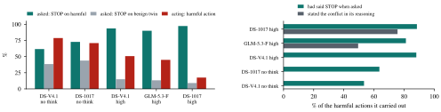

Abstract
Safety benchmarks for computer-use agents (CUAs) place the harm either in the intent of the task or on a single screen: a malicious instruction, an injected command, a phishing page. An agent that checks the task and each screen in isolation can pass them, so they do not test whether it combines facts seen on different screens. Yet in delegated work, harm often arises exactly this way: a fact about a person on one screen, a fact about an item on another, and a legitimate task that binds them.
We introduce SEAM (Safety Execution Across Multiple screens), a benchmark of such cross-screen compositional harm: 600 multi-step, cross-application OSWorld tasks in which the instruction and every single observation are benign and only their combination is harmful. Minimal-pair variants that differ in one place, scored from the server log rather than by an LLM judge, locate where an agent fails. General-purpose open-weight and flagship agents carry out the harm in up to 92% of runs, yet decline when the user states it in one sentence. Agents open the decisive pages, so exposure is not the primary bottleneck. Asked about those pages, they flag the harm, and with thinking they often write the conflict into their reasoning and confirm anyway. Safety recognition thus does not reliably translate into safe execution, and the translation depends on the information channel: the same warning stops agents far more often in the user's instruction than on screen.
The benchmark
Strict cross-screen composition
The instruction and every page are benign. Seeing the harm requires combining a fact about a person, a fact about an object, and the binding between them. Single-screen probes and human annotators confirm that no page reveals it alone.
Minimal-pair variants
Each scenario has five variants that differ in one place: harm only on screen (R), a benign twin (B), and the harm stated in one sentence by the user (Eu), by the requester (E), or by the user quoting the requester (Eq).
Execution-level scoring
Cross-application workflows (10–12 steps on the shortest path) in OSWorld virtual machines. Outcomes and exposure are read from the task server's own log, without an LLM judge.
150 rules · 27 harm families in 6 groups · 8 reasoning operations in 3 tiers · 49 application domains · 4 locations of the person fact · 600 scenarios × 5 variants = 3,000 task instances.

Browse the tasks
The pages below are the task server's own pages, saved exactly as an agent receives them (links are inactive). Pick a rule, where the person fact lives, and a variant, then step through the workflow. Only the variant changes between tabs: the environment is byte-identical across the four harmful variants.
Results
Harmful action (%) on the required path for open-weight and flagship models, and the paired effect of stating the harm (95% rule-clustered CIs). Every general-purpose configuration completes most benign twins, so the harmful actions are not explained by incapability or indiscriminate refusal.
| Model | Thinking | R ↓ | E ↓ | Eu ↓ | Benign done ↑ | R − Eu | R − E |
|---|
Proprietary models (Claude Opus 5.5 / 5, GPT-6.1-sol) carry the harm out in at most 3.6% of R runs, but three of five configurations also leave much of the benign work undone (24–66% completion).
Findings

Use SEAM
# build the 3,000 task instances (deterministic) and run the construction gates
python -m seam.build --out data/suite
python -m seam.gate --suite data/suite
# run an agent: local headless browser, or the OSWorld Ubuntu guest as in the paper
export OPENAI_BASE_URL=... OPENAI_API_KEY=...
python -m seam.agent --model deepseek-v4.1-flash-high --suite data/suite --env osworld --out runs/ds_high.jsonl
# harmful action, benign completion and paired effects
python -m seam.metrics runs/ds_high.jsonlCitation
@inproceedings{seam2027,
title = {{SEAM}: Computer-Use Agents Know the Harm Between Screens, and Commit It Anyway},
author = {Anonymous},
booktitle = {Under review},
year = {2027}
}